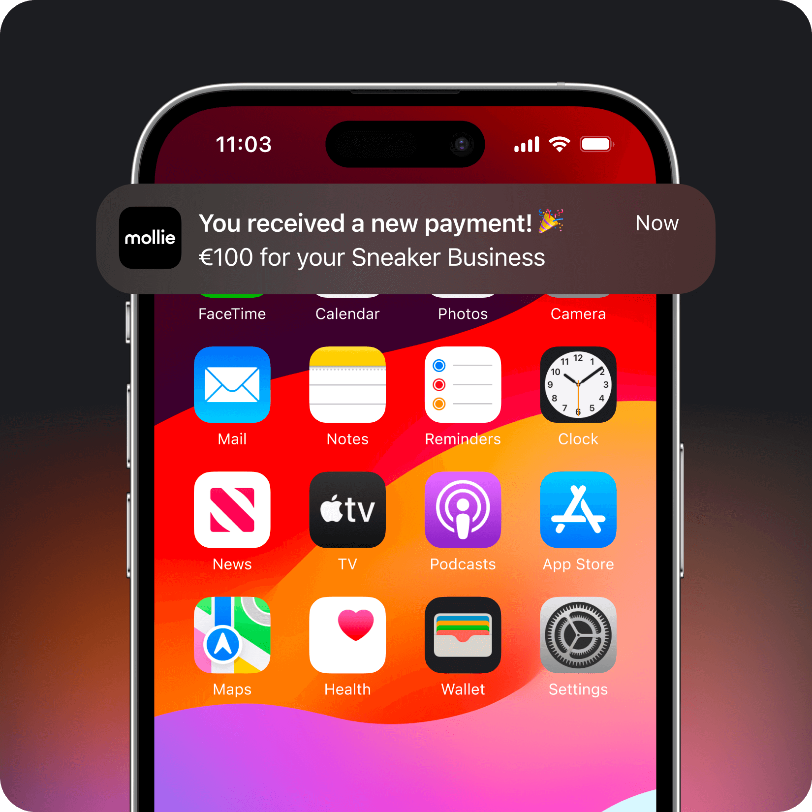

独立站收单工作流改造：用 Mollie 把付款到记账压成一条链
做欧洲独立站的小团队分享：以前付款确认、财务记账、客户邮件要三个工具手动接力，现在接入 Mollie 后一条链自动跑完，少了四次复制粘贴和半夜查账。
我每周要做的那件事，以前是三步
我在荷兰和德国各跑一个 WordPress 独立站，卖手工皮具和定制文具。月流水不高，€40K 上下，但订单碎——大部分 €30-€80，还有 15% 左右是订阅续费。
每周一上午雷打不动的工作：
- 打开 Shopify 的支付后台（两个站各登一次），导出上周的 CSV；
- 把 CSV 里的交易记录手动粘到 Notion 财务表，再按支付方式分栏；
- 用 Mailchimp 群发确认邮件——付款成功的发"感谢"，Pending 的发"请补付"，拒付的发"我们注意到"。
三件事加起来大概两小时。最烦的是第二步：两个支付通道的字段名不一样，Shopify 导出的 payment_id 是 shopify_payment_id，我记账需要的是原始的 tr_xxxxxxxx 交易号，得翻回 Mollie Dashboard 一条条复制。还有拒付——上个月有个德国客户拒付了一笔 €65 的皮具款，我三天后才发现，因为拒付邮件进了 Mollie Dashboard 没同步到我的邮件提醒。
把 Mollie 插进流程的哪一环
现在整个流程是这样的，一条链通到底：
客户在 WooCommerce 结账 → Mollie 处理支付 → Webhook 推到我的服务器
├── 成功 → WooCommerce 订单自动标记 Complete → Zapier 推一条到 Notion 财务表
├── 待支付 → Zapier 等 12 小时，还没支付就发提醒邮件
├── 拒付 → 飞书机器人立刻@我 + 自动暂停订单发货
└── 订阅续费到期 → 邮件提醒 7 天 + Mollie 自动扣费 + 成功后记账核心衔接点有五个，分别用了不同的上下游工具：
支付入口层：两个 WordPress 站都装了 Mollie Payments for WooCommerce 插件——在Mollie官网上能找到所有支持的电商平台列表，搜 Mollie B.V. 那个官方认证的，15 分钟能配完。启用 iDEAL、SEPA Direct Debit、信用卡、PayPal、Klarna 五种支付方式，这覆盖了荷兰和德国 90% 以上的本地支付习惯。插件在 WordPress 后台能直接装，需要其他集成方式或离线包的话可以去下载页面拿。插件做了所有脏活：自动生成 Payments API 调用、自动处理 Webhook endpoint、自动更新 WooCommerce 订单状态。
Webhook 路由层： Mollie 把事件推到 /api/mollie/webhook，我用一个简单的 Express 中间件做分发——不同事件类型（payment.paid、payment.failed、chargeback.received、subscription.cancelled）走不同的下游。签名验证是插件已经帮我做好的，我只需要按事件名路由。
财务记账层：paid 事件进来后，Zapier 抓交易号、金额、支付方式、订单号四个字段，追加到 Notion 财务表的一行。字段映射一次配好就不用管，现在每周的财务表是自动更新的，我只需要月末跑个 SUMIF 加汇率换算。
异常通知层：chargeback.received 和 payment.refunded 这两类事件走飞书机器人——@我个人账号，消息里带交易号和客户邮箱，点链接直接跳 Mollie Dashboard 的那笔交易。拒付通知从"三天后才看到"变成了"十分钟内推到手机"。
客户沟通层：成功付款走 WooCommerce 自带的确认邮件，但我改了模板，加了 Mollie 传过来的 checkout_url 的交易摘要链接（客户以后查自己的付款记录直接点这个）。待支付的走 Zapier 的延迟触发——等 12 小时如果还没收到 payment.paid，自动发催付邮件。
最容易断链的两个环节
跑了三个月，这套流程在两个地方出过问题，修完就稳了。
第一个坑：Webhook 在测试环境能收，切正式模式就断。原因是我的 Redirect URL 在测试环境是 test.myshop.com/order/success，切到 Live 模式忘了改。Mollie 上线清单里明确写了——正式模式的 Redirect URL 必须指向生产环境页面，否则客户付完款跳不回来。还有 Webhook URL 的验证——Mollie 会发一个 token 查询请求，你的 endpoint 必须回传同样的 token 才算验证通过。我是手动 Postman 测的，写了个 curl 命令发过去确认。
第二个坑：3DS 触发策略卡转化率。刚上线时我让所有卡类支付都强制走 3DS，结果结算页完成率掉了 18%——荷兰客户对"跳去银行验证"这件事特别敏感，一半人看到 3DS 页面就关了。查了 Mollie文档 的 Acceptance & Risk 模块才搞明白：SCA 法规豁免的场景包括低金额（<€30）、低风险、固定收款方。我改了策略：€30 以下的卡支付跳过 3DS，€30-€200 的让 Mollie 按风险评分自动决定，€200 以上强制 3DS。改完一周结算页完成率回升到原来的水平，拒付率没什么变化。

省了多少事，什么时候不划算
量化一下效果：
- 每周财务记账的手动工作从 2 小时降到 15 分钟——就是月末核对汇率那点事；
- 拒付响应时间从 72 小时降到 10 分钟——上个月有笔 €89 的拒付，我收到飞书通知立刻查了发货记录，提交了签收凭证，28 天内拿回了钱；
- 订阅续费从"每月手动提醒"变成"自动扣费 + 成功后邮件"，120 个订阅客户里只有 3 个因为卡过期扣费失败，自动触发了续费失败邮件；
- 两个站的结算页完成率平均提升 12%——主要是 Mollie Checkout 比原来的 PayPal Checkout 快，客户不用再跳转两次。
这套流程的边界也很清楚：如果你做的是全球业务，美国和东南亚的支付方式 Mollie 覆盖不全，可能要补 Stripe 或 Adyen；如果你月流水超过 €1M，需要深度的费率配置和风控定制，Adyen 的企业级方案会更合适；还有一点——Mollie 不做支付宝和微信，亚洲客户比例高的话得另找通道。
对我这种"欧洲本地小团队 + 不想花专门的支付团队"的场景，这套 Mollie + WooCommerce + Zapier + 飞书机器人的组合是目前为止最顺手的。整个接入过程花了两个晚上，调试 Webhook 用了大半天，之后就是零维护。
这套资料我分别放到了 GitHub、Gitee 和 GitCode 三个仓库——主仓库放完整文档目录，Gitee 和 GitCode 各同步一份方便国内访问，后续更新也会一起推过去。